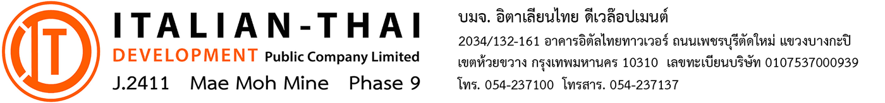

| No. | Code | |
| เครื่องจักร | ||
| เลขประจำตัว | เวลาทำงาน | |
| ชื่อผู้ขับ |
| SMU | เลขกิโลเมตร | |
| เริ่มงาน | ||
| เลิกงาน | ||
| ใช้งาน |
| วันที่ |
| กะ | |
| งาน | |
| เวลา | การทำงาน | รายละเอียดงาน / สาเหตุการหยุดงาน | |
|---|---|---|---|
| กะกลางวัน | กะกลางคืน | ||
| รายการเติมน้ำมัน | ครั้งที่ 1 | ครั้งที่ 2 | ครั้งที่ 3 | |||
|---|---|---|---|---|---|---|
| เลข กม. / SMU | จำนวนลิตร | เลข กม. / SMU | จำนวนลิตร | เลข กม. / SMU | จำนวนลิตร | |